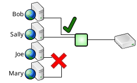
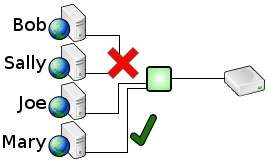

...
...
...
Connection schedules constrain database access to specified times.
For example, only Bob and Sally may be allowed to access the database during the day shift.

While only Joe and Mary may be allowed to access the database during the night shift.

Database access can be constrained to any combination of years, months, days of the month, days of the week, and times of day.
A complete description of connection schedules with example configuration files is given here.
Query filtering prevents queries that match a certian pattern from being run at all. There are often certain queries that will bring the entire database to its knees. A common use for query filtering is to identify those queries and prevent them from being run.
For example, select * from hugetable where id=100 might be fine...
...but select * from hugetable without a where clause might crush the database.
SQL Relay can be configured to allow one and reject the other.
A complete descripton of query filtering with example configuration files is given here.